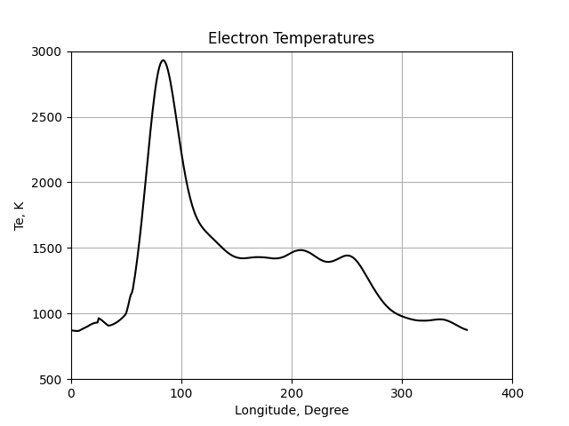

Note
Click here to download the full example code
Using pyglow¶

from pyglow.pyglow import Point
from datetime import datetime
import matplotlib.pyplot as plt
import numpy as np
lat = 0 # Geographic Latitude
alt = 590 # Altitude
lons = np.arange(0, 360) # Longitudes
dn = datetime(2004, 9, 21, 1, 0) # 1 UT
Te = np.empty(len(lons))
for i, lon in enumerate(lons):
pt = Point(dn, lat, lon, alt)
pt.run_iri()
Te[i] = pt.Te
plt.plot(lons, Te, 'k')
plt.title('Electron Temperatures')
plt.xlabel('Longitude, Degree')
plt.ylabel('Te, K')
plt.ylim(500, 3000)
plt.xlim(0, 400)
plt.xticks([0, 100, 200, 300, 400])
plt.grid()
plt.show()
Total running time of the script: ( 0 minutes 0.545 seconds)